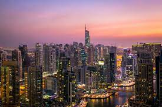
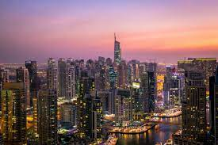

Tokyo, Japan

.jpeg)
Geographical location: Asia
Tokyo is located on the east side of Japan’s Honshu Island. It is the capital of Japan as well as the most populated city, home to 14 million people. Tokyo has the largest economy in the world of a city by Gross Domestic Product
Tokyo is known for being one of the most modern cities in the world. Tokyo is sprawling with high skyscrapers all filled with lights and advertisements on the sides along with thousands of people inside of them. Tokyo is also known for historic shrines and temples surrounding the city which have been around for centuries. The oldest temple in Tokyo is called the Sensoji at Asakusa.
Photo Gallery


Rome, Italy


Geographical Location: Europe
The national capital of Italy remains a historical and political hub today. Nicknamed the “Eternal City,” Rome is considered the origination of the Catholic Church and Roman civilization central to the development of the Western World. Divided into 22 walled rioni (districts) surrounded by 35 quartieri urbani (urban sectors) that are surrounded by 6 large suburbi (suburbs), the city, just larger than New York City at an area of 496 mi2, is home to 2.8 million residents. Its economy runs on the tourism and services industries, the latter mostly in government jobs.
The Via del Corso, named after Roman carnival horse races, is the main street that runs through Rome. Many significant churches, palaces, and squares run along this road (Piazza del Popolo, and the Spanish Steps in Piazza di Spagna, for example). The seven hills that surround Rome are trenched with mythological history which can be seen through the prevalence of temples. Must see landmarks for those traveling include the Colosseum, Roman Forum, Pantheon, and Catacombs. St. Peter’s Square & Basilica and the Sistine Chapel, technically located within Vatican City – an independent city-state within Rome – are also worth a visit.
Photo Gallery


Seattle, Washington

Geographical Location: North America
Seattle, Washington is located in the United States on the North American continent. Seattle is broken up into neighborhoods, some being Capitol Hill, Pioneer Square and Queen Anne. Nearby suburbs include Mercer Island, Bellevue and Kirkland, located approximately 15-20 minutes from Seattle.
The University of Washington is located in Seattle. There is an undergraduate and a graduate program within the University and it is known for its pristine academics. U of W is located in the Northern part of Seattle.
Photo Gallery


Zermatt, Switzerland


Geographical Location: Europe
Zermatt is a beautiful place, with 365 degree views of the mountains. It’s known for its famous mountain “the Matterhorn,” which is visible from nearly everywhere in the town. The town is vibrant, filled with patrons walking around, shopping for the most high quality snow boots, eating hot Rosti and drinking wine.
The skiing in Zermatt is unparalleled. Every day in the winter you can find people skiing all day. When it snows, the mountain becomes even more crowded, with skiers flocking to the mountain from around the country and the world.
Photo Gallery


Dubai, UAE
 

Geographical Location: Asia
Dubai, a city known for its impressive structures like Burj Khalifa and Palm Jumeirah, combines advanced technology with modern architecture. The city hosts Dubai Internet City, where big tech companies and startups collaborate, aiming to become smarter by using technologies like blockchain to enhance government processes. Additionally, Dubai's plans to implement 3D printing for constructing buildings represent a major step into the future.
Exploring Dubai means not only admiring its remarkable buildings but also understanding how it leverages technology to transform operations. The city's approach encompasses both architectural marvels and innovative tech solutions, making it an exciting prospect for individuals curious about the intersection of technology and urban development.
Photo Gallery